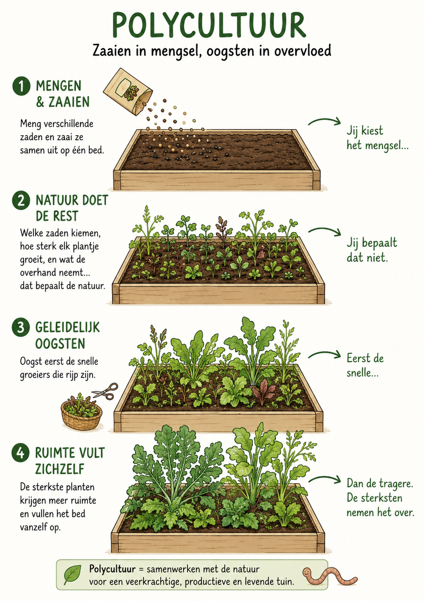

Wat is het?
Polycultuur is het mengen van verschillende zaden en die samen op één bed uitzaaien. Je kiest het mengsel, maar daarna neemt de natuur het over: welke zaden kiemen, hoe sterk elk plantje groeit, en wat er uiteindelijk de overhand neemt — dat bepaal jij niet meer.
Je oogst geleidelijk wat rijp is: eerst de snelle groeiers, dan de tragere. De sterkste planten vullen de vrijgekomen ruimte vanzelf op.
Waarom werkt het?
- Eenvoudig te starten: één handbeweging, een heel bed bezaaid.
- Verschillende gewassen benutten de bodem op verschillende dieptes.
- Snelle en trage groeiers vullen elkaar aan in de tijd.
- De diversiteit vermindert de kans op grote plaaguitbraken.
- Je leert snel welke combinaties in jouw bodem goed gedijen.
Hoe pas je het toe?
- Meng zaden van gewassen met verschillende groeisnelheden — bijvoorbeeld sla, radijs, wortel en spinazie.
- Verwijder tijdelijk de mulch van het bed, zaai het mengsel in en druk licht aan.
- Hou de bodem vochtig tot de kiemen zichtbaar zijn.
- Oogst regelmatig wat groot genoeg is, zonder het hele bed leeg te halen.
- Laat de sterkste planten uitgroeien en de ruimte overnemen.
Het grootste nadeel
Polycultuur en mulch verdragen elkaar slecht. Een dikke mulchlaag bemoeilijkt het kiemen van kleine zaden, dus je moet de mulch tijdelijk wegschuiven om te zaaien. Zolang de kiemplantjes klein zijn, kan de mulch ook niet terug — en net dan is de bodem kwetsbaar voor uitdroging en onkruid.
Je verliest dus tijdelijk alle voordelen van het mulchen. Dat is een bewuste afweging: polycultuur geeft variatie en eenvoud, maar vraagt een periode zonder bodembescherming.
Nuance
Je hebt alleen de start in de hand. Wat er daarna gebeurt, is een samenspel van bodem, zaad en weer — en dat is precies de charme.